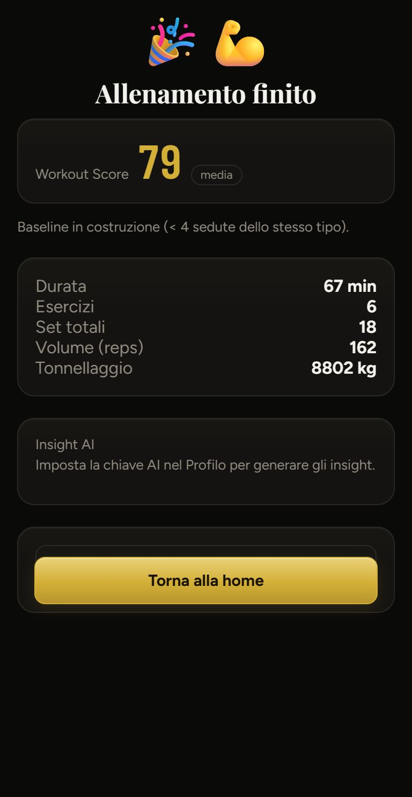
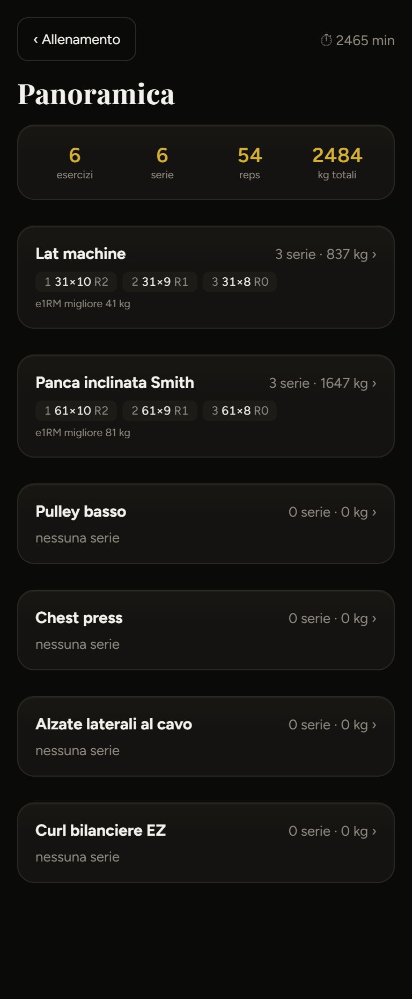
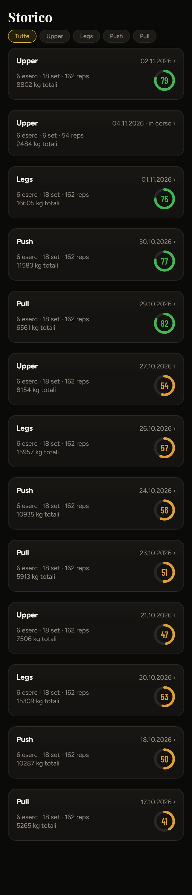
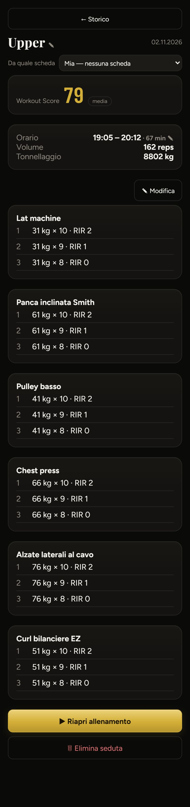
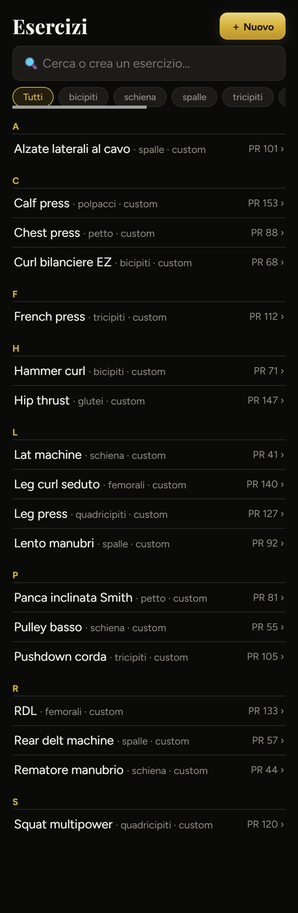

A sinistra com'è oggi (dati finti), a destra la proposta. Filo comune: ogni schermata risponde subito alla domanda «sono andato meglio dell'ultima volta?», con il confronto con la stessa scheda, e le azioni stanno in basso dove arriva il pollice. Le funzioni di oggi restano tutte.
Oggi: due emoji, una tabella di numeri senza confronto, un riquadro AI vuoto e un campo vuoto sopra il bottone. Proposta: il voto in un anello, tre numeri contro l'ultima volta della stessa scheda, i record e cosa è salito.

Oggi: card alte uguali per tutti, «0 serie · 0 kg» ripetuto, nessuna idea di dove sei. Proposta: barra di avanzamento, un elenco compatto con lo stato di ogni esercizio, e «Termina» sempre in basso.

Oggi: una card alta per seduta, tutte uguali («6 eserc · 18 set · 162 reps»), 13 sedute = 4 schermate. Proposta: righe compatte divise per settimana, filtro per scheda, e in cima l'andamento del voto.

Oggi: «← Storico» largo come un bottone, un menu a tendina in testa, numeri in tabella, «Modifica / Riapri / Elimina» sparsi. Proposta: barra con ‹ e ⋯, i dati in etichette, le serie in fila con il confronto per esercizio.

Oggi: elenco alfabetico con «· custom» ripetuto su ogni riga e solo il PR. Proposta: per ognuno l'ultimo carico, quando l'hai fatto e la tendenza; in cima quelli delle tue schede.
